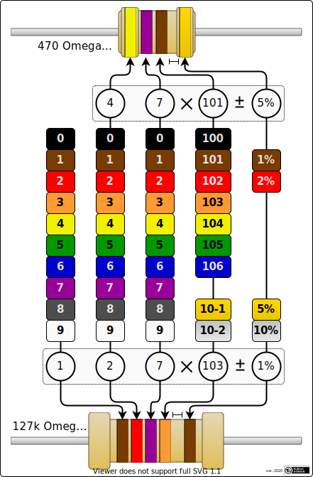

Click the book icon to open/close help and cheat sheet.
(Please enable JavaScript for this page to use the resistor trainer)
R=Ω

Description
This small trainer helps you memorising the color codes of standard resistors via repetitive entering values for
randomly generated resistors. Data are partially generated from E-series, partially with free random data. Accepted
formats in the input field are e.g. "100.1K/5%", "100k1 5%", "100100/5", or "100.1e3". There is no "submit" button,
press return/enter instead to check your input and generate new data ("Optimised for numpad"). The tolerance input
is optional, but if given it has to be correct. With the check result (green=ok, red=incorrect) the correct value
is shown - this also contains the E-Series the resistor is contained in, and also commonly used representations of
the correct resistor.